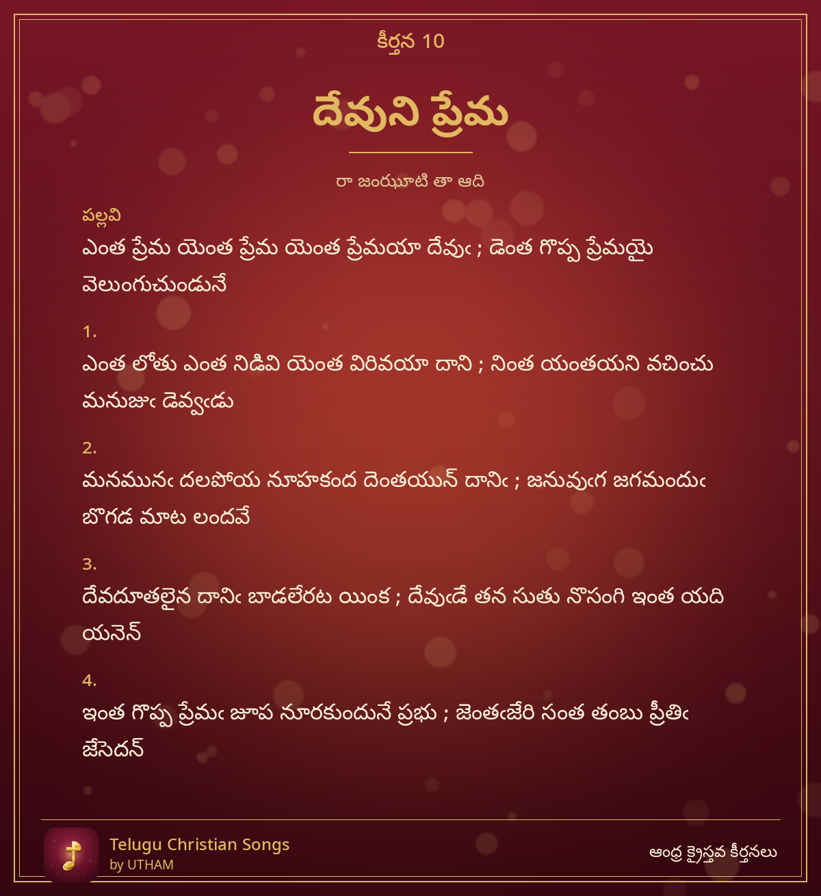

కీర్తన 10 – దేవుని ప్రేమ

Devuni Prema – emta prema yemta prema yemta premayaa devu
పల్లవి (Pallavi)
ఎంత ప్రేమ యెంత ప్రేమ యెంత ప్రేమయా దేవుఁ ; డెంత గొప్ప ప్రేమయై వెలుంగుచుండునే
చరణం 1
ఎంత లోతు ఎంత నిడివి యెంత విరివయా దాని ; నింత యంతయని వచించు మనుజుఁ డెవ్వఁడు
చరణం 2
మనమునఁ దలపోయ నూహకంద దెంతయున్ దానిఁ ; జనువుఁగ జగమందుఁ బొగడ మాట లందవే
చరణం 3
దేవదూతలైన దానిఁ బాడలేరట యింక ; దేవుఁడే తన సుతు నొసంగి ఇంత యది యనెన్
చరణం 4
ఇంత గొప్ప ప్రేమఁ జూప నూరకుందునే ప్రభు ; జెంతఁజేరి సంత తంబు ప్రీతిఁ జేసెదన్
–